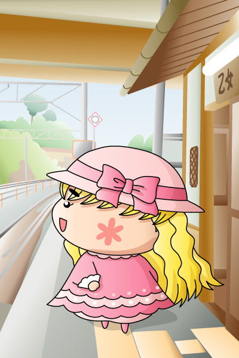

オトメ「ヤッくんとのデートはここで決まりだわ！」
このところ出番のないオトメでしたが、ヤシチの見えないところで密かにデートの計画は進んでいたりして。そんなオトメが選んだデートスポットはＪＲ小海線の乙女駅！？ ４５話（「オトチョコでラブパニ？」）でヤシチへ渡すチョコに細工をしていたオトメちゃんなので、きっと今頃は乙女駅にいろんな仕掛けをセッティングしていることでしょう。ヤシチとのデートが成功するかどうかは…みなさまのご想像におまかせします(^^;。
えーっと、2004年9月12日に乙女駅を訪問した記念のイラストです。乙女駅のホームから小淵沢方面に向けて撮影した写真をトレースしてそこにオトメちゃんを乗せてみましたが、思いっきりサイズを無視していますね（オトメが大きすぎ^^;）。妖精界の乙女駅、というイメージで眺めてみてください(笑)。
(2004/9/18)